8 Correlation and Regression
Notes taken during/inspired by the Datacamp course ‘Correlation and Regression’ by Ben Baumer.
8.1 Visualizing two variables
Some common terminology of data includes
- Response variable a.k.a. y, dependent (usually on the vertical axis if using a scatter plot)
- Explanatory variable, something you think might be related to the response a.k.a. x, independent, predictor (usually on the horizontal axis)
library(openintro)
library(ggplot2)
library(dplyr)
library(tidyr)
# load the data
data(ncbirths)
# Scatterplot of weight vs. weeks
ggplot(ncbirths, aes(weeks, weight)) +
geom_point()## Warning: Removed 2 rows containing missing values (geom_point).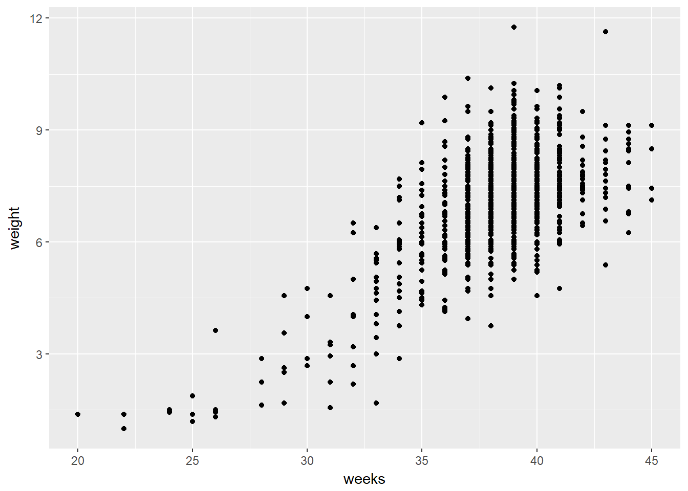
If it is helpful, you can think of boxplots as scatterplots for which the variable on the x-axis has been discretized.
The cut() function takes two arguments: the continuous variable you want to discretize and the number of breaks that you want to make in that continuous variable in order to discretize it.
# Boxplot of weight vs. weeks
ggplot(data = ncbirths,
aes(x = cut(weeks, breaks = 5), y = weight)) +
geom_boxplot()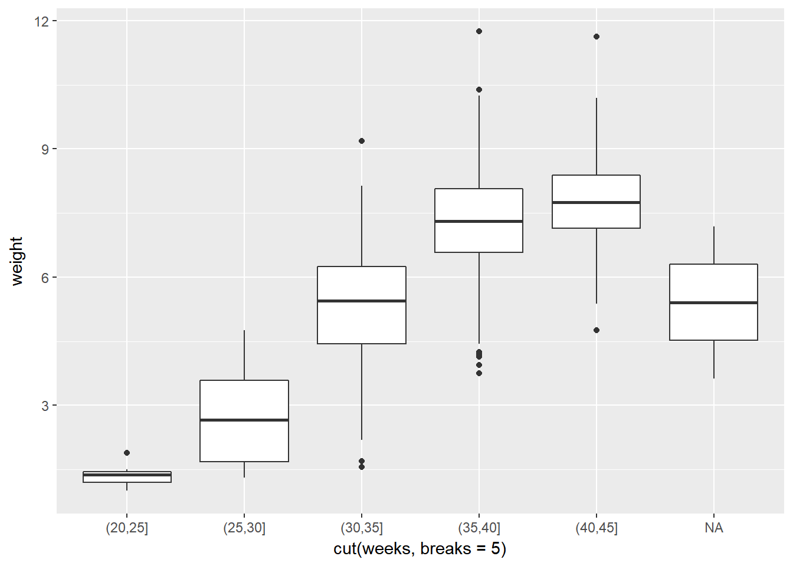
8.1.1 Transformations
Here the relationship is hard to see.
data(mammals)
# Mammals scatterplot
ggplot(mammals, aes(BodyWt, BrainWt)) +
geom_point()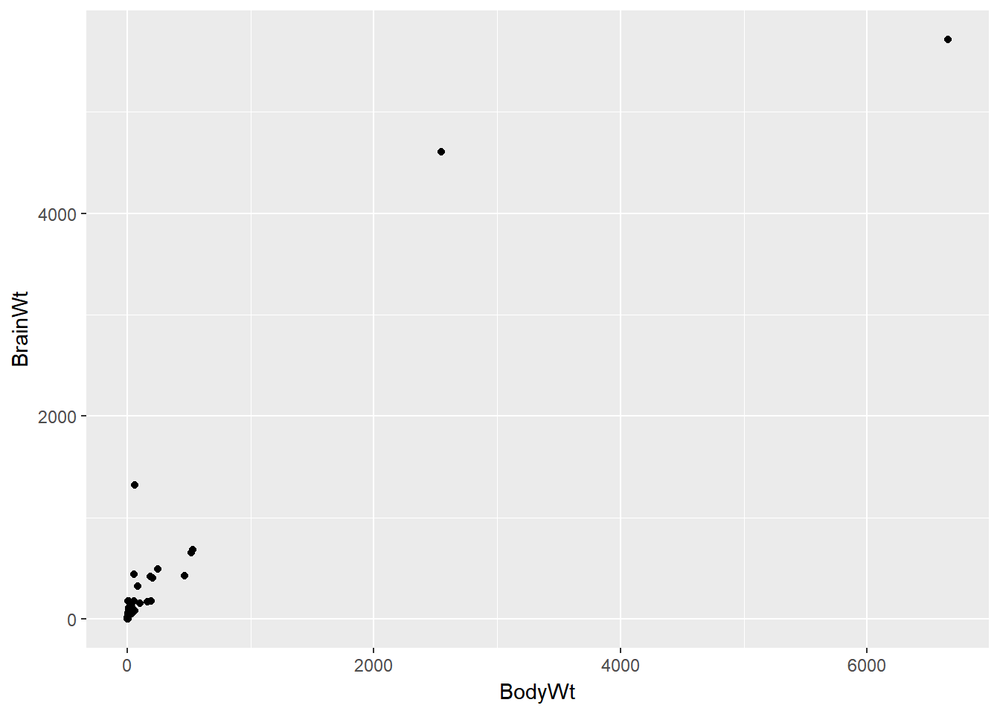
The relationship between two variables may not be linear. In these cases we can sometimes see strange and even inscrutable patterns in a scatterplot of the data. Sometimes there really is no meaningful relationship between the two variables. Other times, a careful transformation of one or both of the variables can reveal a clear relationship.
ggplot2 provides several different mechanisms for viewing transformed relationships. The coord_trans() function transforms the coordinates of the plot. Alternatively, the scale_x_log10() and scale_y_log10() functions perform a base-10 log transformation of each axis. Note the differences in the appearance of the axes.
# Scatterplot with coord_trans()
ggplot(data = mammals, aes(x = BodyWt, y = BrainWt)) +
geom_point() +
coord_trans(x = "log10", y = "log10")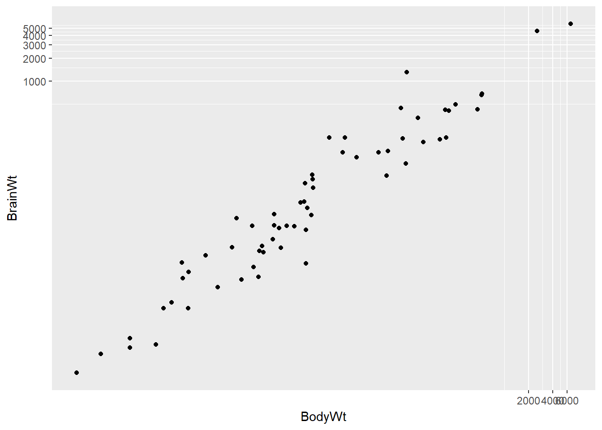
# Scatterplot with scale_x_log10() and scale_y_log10()
ggplot(data = mammals, aes(x = BodyWt, y = BrainWt)) +
geom_point() +
scale_x_log10() + scale_y_log10()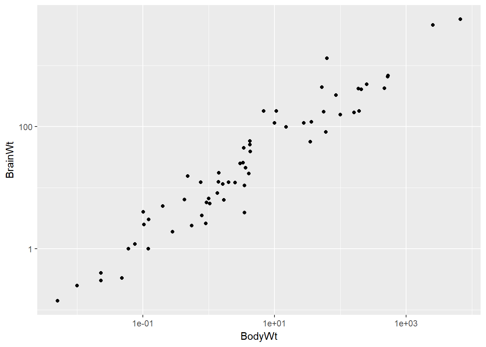
8.1.2 Identifying Outliers
It is clear here, using the Using the mlbBat10 dataset, a scatterplot illustrates how the slugging percentage (SLG) of a player varies as a function of his on-base percentage (OBP).
data("mlbBat10")
# Baseball player scatterplot
ggplot(mlbBat10, aes(OBP, SLG)) +
geom_point()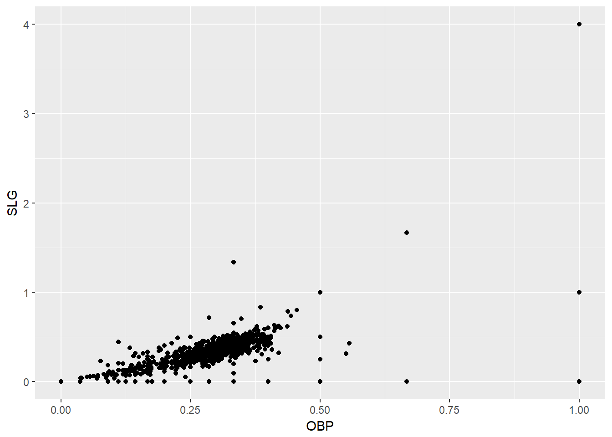
Most of the points are clustered in the lower left corner of the plot, making it difficult to see the general pattern of the majority of the data. This difficulty is caused by a few outlying players whose on-base percentages (OBPs) were exceptionally high. These values are present in our dataset only because these players had very few batting opportunities.
Both OBP and SLG are known as rate statistics, since they measure the frequency of certain events (as opposed to their count). In order to compare these rates sensibly, it makes sense to include only players with a reasonable number of opportunities, so that these observed rates have the chance to approach their long-run frequencies.
In Major League Baseball, batters qualify for the batting title only if they have 3.1 plate appearances per game. This translates into roughly 502 plate appearances in a 162-game season. The mlbBat10 dataset does not include plate appearances as a variable, but we can use at-bats (AB) – which constitute a subset of plate appearances – as a proxy.
# Scatterplot of SLG vs. OBP
mlbBat10 %>%
filter(AB >= 200) %>%
ggplot(aes(x = OBP, y = SLG)) +
geom_point()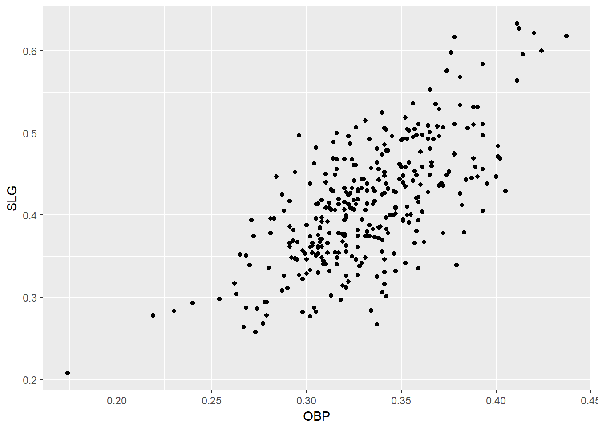
# Identify the outlying player
mlbBat10 %>%
filter(AB >= 200, OBP < 0.2)## name team position G AB R H 2B 3B HR RBI TB BB SO SB CS OBP
## 1 B Wood LAA 3B 81 226 20 33 2 0 4 14 47 6 71 1 0 0.174
## SLG AVG
## 1 0.208 0.1468.2 Correlation
We typically calculate the Pearsons aka Pearson product-moment correlation. The cor(x, y) function will compute the Pearson product-moment correlation between variables, x and y. Since this quantity is symmetric with respect to x and y, it doesn’t matter in which order you put the variables.
At the same time, the cor() function is very conservative when it encounters missing data (e.g. NAs). The use argument allows you to override the default behavior of returning NA whenever any of the values encountered is NA. Setting the use argument to “pairwise.complete.obs” allows cor() to compute the correlation coefficient for those observations where the values of x and y are both not missing.
data(ncbirths)
# Compute correlation between the birthweight and mother's age
ncbirths %>%
summarize(N = n(), r = cor(mage, weight))## N r
## 1 1000 0.05506589# Compute correlation for all non-missing pairs
ncbirths %>%
summarize(N = n(), r = cor(weight, weeks, use = "pairwise.complete.obs"))## N r
## 1 1000 0.67010138.2.1 Anscombe Dataset
In 1973, Francis Anscombe famously created four synthetic datasets with remarkably similar numerical properties, but obviously different graphic relationships. The Anscombe dataset contains the x and y coordinates for these four datasets, along with a grouping variable, set, that distinguishes the quartet.
data("anscombe")
# Tidy the data for plotting
Anscombe <- anscombe %>%
mutate(id = seq_len(n())) %>%
gather(key, value, -id) %>%
separate(key, c("variable", "set"), 1, convert = TRUE) %>%
mutate(set = c("1", "2", "3", "4")[set]) %>%
spread(variable, value)
# Plot the four variants
ggplot(data = Anscombe, aes(x = x, y = y)) +
geom_point() +
facet_wrap(~ set)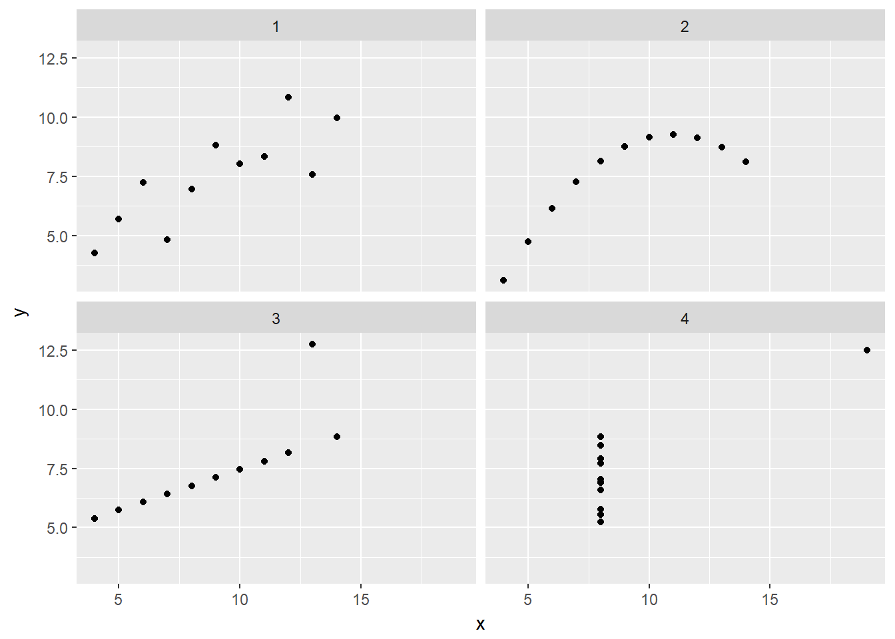
# Compute statistics for the sets
Anscombe %>%
group_by(set) %>%
summarize(N = n(), mean(x), sd(x), mean(y), sd(y), cor(x,y))## # A tibble: 4 x 7
## set N `mean(x)` `sd(x)` `mean(y)` `sd(y)` `cor(x, y)`
## <chr> <int> <dbl> <dbl> <dbl> <dbl> <dbl>
## 1 1 11 9 3.316625 7.500909 2.031568 0.8164205
## 2 2 11 9 3.316625 7.500909 2.031657 0.8162365
## 3 3 11 9 3.316625 7.500000 2.030424 0.8162867
## 4 4 11 9 3.316625 7.500909 2.030579 0.81652148.3 Linear Regression
The simple linear regression model for a numeric response as a function of a numeric explanatory variable can be visualized on the corresponding scatterplot by a straight line. This is a “best fit” line that cuts through the data in a way that minimizes the distance between the line and the data points.
We might consider linear regression to be a specific example of a larger class of smooth models. The geom_smooth() function allows you to draw such models over a scatterplot of the data itself. This technique is known as visualizing the model in the data space. The method argument to geom_smooth() allows you to specify what class of smooth model you want to see. Since we are exploring linear models, we’ll set this argument to the value “lm”.
data(bdims)
# Scatterplot with regression line
ggplot(data = bdims, aes(x = hgt, y = wgt)) +
geom_point() +
geom_smooth(method = "lm", se = TRUE)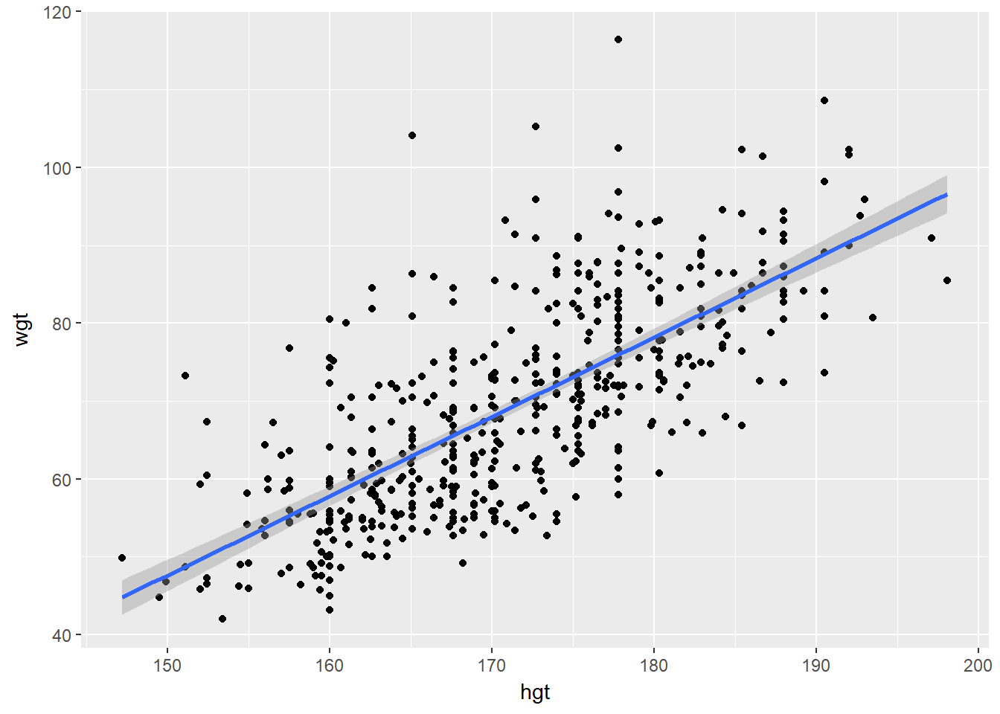
Sometimes it is better to think of the model error as ‘noise’ which we might try to better incorporate by creating a better model.
Two facts enable you to compute the slope b1 and intercept b0 of a simple linear regression model from some basic summary statistics.
First, the slope can be defined as:
b1=rX,Y⋅sYsX
where rX,Y represents the correlation (cor()) of X and Y and sX and sY represent the standard deviation (sd()) of X and Y, respectively.
Second, the point (x¯,y¯)is always on the least squares regression line, where x¯and y¯denote the average of x and y, respectively.
The bdims_summary data frame contains all of the information you need to compute the slope and intercept of the least squares regression line for body weight (Y) as a function of height (X).
N <- c(1507)
r <- c(0.7173011)
mean_hgt <- c(171.1438)
sd_hgt <- c(9.407205)
mean_wgt <- c(69.14753)
sd_wgt <- c(13.34576)
bdims_summary <- data.frame(N, r, mean_hgt, sd_hgt, mean_wgt, sd_wgt)
# Print bdims_summary
bdims_summary## N r mean_hgt sd_hgt mean_wgt sd_wgt
## 1 1507 0.7173011 171.1438 9.407205 69.14753 13.34576# Add slope and intercept
bdims_summary %>%
mutate(slope = r * sd_wgt / sd_hgt,
intercept = mean_wgt - slope * mean_hgt)## N r mean_hgt sd_hgt mean_wgt sd_wgt slope intercept
## 1 1507 0.7173011 171.1438 9.407205 69.14753 13.34576 1.017617 -105.01128.3.1 Regression to the Mean
Regression to the mean is a concept attributed to Sir Francis Galton. The basic idea is that extreme random observations will tend to be less extreme upon a second trial. This is simply due to chance alone. While “regression to the mean” and “linear regression” are not the same thing, we will examine them together in this exercise.
One way to see the effects of regression to the mean is to compare the heights of parents to their children’s heights. While it is true that tall mothers and fathers tend to have tall children, those children tend to be less tall than their parents, relative to average. That is, fathers who are 3 inches taller than the average father tend to have children who may be taller than average, but by less than 3 inches.
# Galton data from http://www.math.uah.edu/stat/data/Galton.html
Galton <- read.csv("Galton.csv")
# Height of children vs. height of father
Galton %>%
filter(Gender == "M") %>%
ggplot(aes(x = Father, y = Height)) +
geom_point() +
geom_abline(slope = 1, intercept = 0) +
geom_smooth(method = "lm", se = FALSE)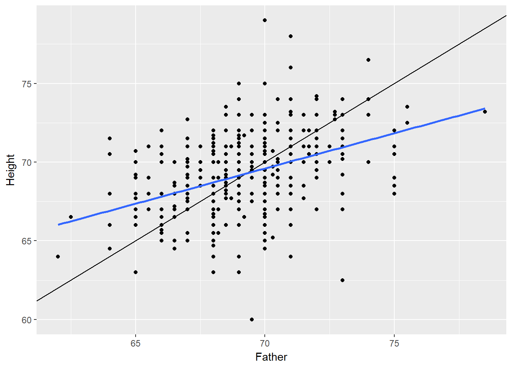
# Height of children vs. height of mother
Galton %>%
filter(Gender == "F") %>%
ggplot(aes(x = Mother, y = Height)) +
geom_point() +
geom_abline(slope = 1, intercept = 0) +
geom_smooth(method = "lm", se = FALSE)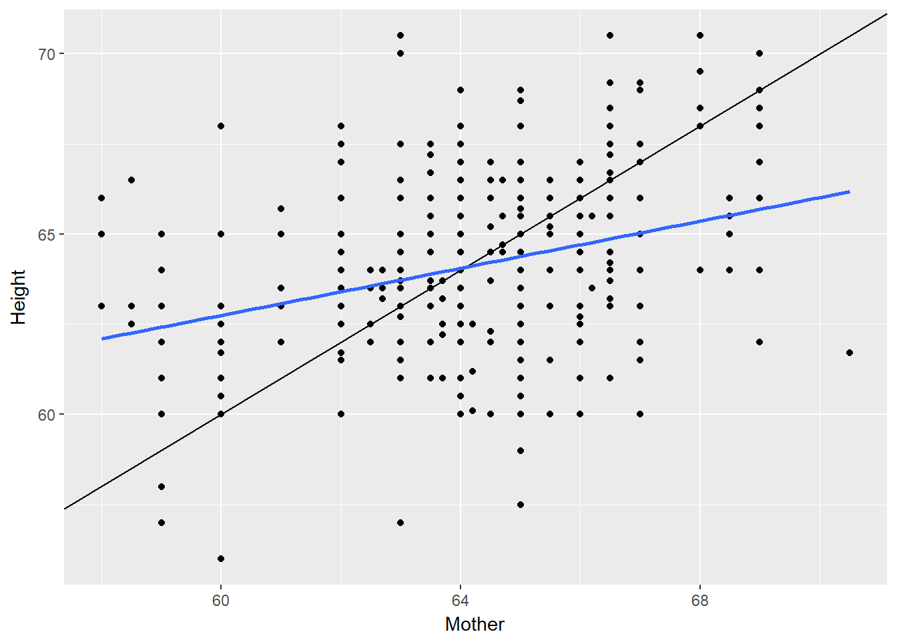
8.3.2 Fitting linear models
While the geom_smooth(method = “lm”) function is useful for drawing linear models on a scatterplot, it doesn’t actually return the characteristics of the model. As suggested by that syntax, however, the function that creates linear models is lm(). This function generally takes two arguments:
A formula that specifies the model A data argument for the data frame that contains the data you want to use to fit the model The lm() function return a model object having class “lm”. This object contains lots of information about your regression model, including the data used to fit the model, the specification of the model, the fitted values and residuals, etc.
# Linear model for weight as a function of height
lm(wgt ~ hgt, data = bdims)##
## Call:
## lm(formula = wgt ~ hgt, data = bdims)
##
## Coefficients:
## (Intercept) hgt
## -105.011 1.018# Linear model for SLG as a function of OBP
lm(SLG ~ OBP, data = mlbBat10)##
## Call:
## lm(formula = SLG ~ OBP, data = mlbBat10)
##
## Coefficients:
## (Intercept) OBP
## 0.009407 1.110323# Log-linear model for body weight as a function of brain weight
lm(log(BodyWt) ~ log(BrainWt), data = mammals)##
## Call:
## lm(formula = log(BodyWt) ~ log(BrainWt), data = mammals)
##
## Coefficients:
## (Intercept) log(BrainWt)
## -2.509 1.225An “lm” object contains a host of information about the regression model that you fit. There are various ways of extracting different pieces of information.
The coef() function displays only the values of the coefficients. Conversely, the summary() function displays not only that information, but a bunch of other information, including the associated standard error and p-value for each coefficient, the R2R2, adjusted R2R2, and the residual standard error. The summary of an “lm” object in R is very similar to the output you would see in other statistical computing environments (e.g. Stata, SPSS, etc.).
Once you have fit a regression model, you are often interested in the fitted values (y^i) and the residuals (ei), where i indexes the observations.
The least squares fitting procedure guarantees that the mean of the residuals is zero (n.b., numerical instability may result in the computed values not being exactly zero). At the same time, the mean of the fitted values must equal the mean of the response variable.
In this exercise, we will confirm these two mathematical facts by accessing the fitted values and residuals with the fitted.values() and residuals() functions
mod <- lm(wgt ~ hgt, data = bdims)
# Show the coefficients
coef(mod)## (Intercept) hgt
## -105.011254 1.017617# Show the full output
summary(mod)##
## Call:
## lm(formula = wgt ~ hgt, data = bdims)
##
## Residuals:
## Min 1Q Median 3Q Max
## -18.743 -6.402 -1.231 5.059 41.103
##
## Coefficients:
## Estimate Std. Error t value Pr(>|t|)
## (Intercept) -105.01125 7.53941 -13.93 <2e-16 ***
## hgt 1.01762 0.04399 23.14 <2e-16 ***
## ---
## Signif. codes: 0 '***' 0.001 '**' 0.01 '*' 0.05 '.' 0.1 ' ' 1
##
## Residual standard error: 9.308 on 505 degrees of freedom
## Multiple R-squared: 0.5145, Adjusted R-squared: 0.5136
## F-statistic: 535.2 on 1 and 505 DF, p-value: < 2.2e-16# Mean of weights equal to mean of fitted values?
mean(bdims$wgt) == mean(fitted.values(mod))## [1] TRUE# Mean of the residuals
mean(residuals(mod))## [1] -1.266971e-15As you fit a regression model, there are some quantities (e.g. R2) that apply to the model as a whole, while others apply to each observation (e.g. y^i). If there are several of these per-observation quantities, it is sometimes convenient to attach them to the original data as new variables.
The augment() function from the broom package does exactly this. It takes a model object as an argument and returns a data frame that contains the data on which the model was fit, along with several quantities specific to the regression model, including the fitted values, residuals, leverage scores, and standardized residuals.
# Load broom
library(broom)
# Create bdims_tidy
bdims_tidy <- augment(mod)## Warning: Deprecated: please use `purrr::possibly()` instead## Warning: Deprecated: please use `purrr::possibly()` instead## Warning: Deprecated: please use `purrr::possibly()` instead## Warning: Deprecated: please use `purrr::possibly()` instead## Warning: Deprecated: please use `purrr::possibly()` instead# Glimpse the resulting data frame
glimpse(bdims_tidy)## Observations: 507
## Variables: 9
## $ wgt <dbl> 65.6, 71.8, 80.7, 72.6, 78.8, 74.8, 86.4, 78.4, 62....
## $ hgt <dbl> 174.0, 175.3, 193.5, 186.5, 187.2, 181.5, 184.0, 18...
## $ .fitted <dbl> 72.05406, 73.37697, 91.89759, 84.77427, 85.48661, 7...
## $ .se.fit <dbl> 0.4320546, 0.4520060, 1.0667332, 0.7919264, 0.81834...
## $ .resid <dbl> -6.4540648, -1.5769666, -11.1975919, -12.1742745, -...
## $ .hat <dbl> 0.002154570, 0.002358152, 0.013133942, 0.007238576,...
## $ .sigma <dbl> 9.312824, 9.317005, 9.303732, 9.301360, 9.312471, 9...
## $ .cooksd <dbl> 5.201807e-04, 3.400330e-05, 9.758463e-03, 6.282074e...
## $ .std.resid <dbl> -0.69413418, -0.16961994, -1.21098084, -1.31269063,...8.4 Model fit
One way to assess strength of fit is to consider how far off the model is for a typical case. That is, for some observations, the fitted value will be very close to the actual value, while for others it will not. The magnitude of a typical residual can give us a sense of generally how close our estimates are.
However, recall that some of the residuals are positive, while others are negative. In fact, it is guaranteed by the least squares fitting procedure that the mean of the residuals is zero. Thus, it makes more sense to compute the square root of the mean squared residual, or root mean squared error (RMSERMSE). R calls this quantity the residual standard error.
To make this estimate unbiased, you have to divide the sum of the squared residuals by the degrees of freedom in the model.
# View summary of model
summary(mod)##
## Call:
## lm(formula = wgt ~ hgt, data = bdims)
##
## Residuals:
## Min 1Q Median 3Q Max
## -18.743 -6.402 -1.231 5.059 41.103
##
## Coefficients:
## Estimate Std. Error t value Pr(>|t|)
## (Intercept) -105.01125 7.53941 -13.93 <2e-16 ***
## hgt 1.01762 0.04399 23.14 <2e-16 ***
## ---
## Signif. codes: 0 '***' 0.001 '**' 0.01 '*' 0.05 '.' 0.1 ' ' 1
##
## Residual standard error: 9.308 on 505 degrees of freedom
## Multiple R-squared: 0.5145, Adjusted R-squared: 0.5136
## F-statistic: 535.2 on 1 and 505 DF, p-value: < 2.2e-16# Compute the mean of the residuals
mean(residuals(mod))## [1] -1.266971e-15# Compute RMSE
sqrt(sum(residuals(mod)^2) / df.residual(mod))## [1] 9.30804Another measure we can use is R squared, whihc is the he coefficient of determination. This gives us the interpretation of R2 as the percentage of the variability in the response that is explained by the model, since the residuals are the part of that variability that remains unexplained by the model. In the example above, our model has an r-squared value of 51.5%. We can also calculate the R-squared value manually if desired.
# Compute R-squared
bdims_tidy %>%
summarize(var_y = var(wgt), var_e = var(.resid)) %>%
mutate(R_squared = 1 - var_e / var_y)## var_y var_e R_squared
## 1 178.1094 86.46839 0.51452088.4.1 Unusual points
As the model tries to fit the data on average, some extreme values can overly influence the model. We can quantify how much influence a particular point has by using the leverage, which is a measure for each observation as a function of the value of the explanatory variable and the mean of the explanatory variable. Therefore points to the centre line have a low leverage score, whilst points far from the line have a higher leverage. The explanatory variable y does not come in to effect. This can be calculated as the .hat value using augment() from broom.
It is possible to have a value with a high leverage but a low overall impact on the model, if the point lies close to the line of the model. In this case, the residual is small for the point. Conversely, a point with a high leverage score and a high residual - a point laying a distance a way from other meaures and not predicted well by the model - does have an impact.We say such a point is influential. Numerically we can use cooks distance (.cooksd)to quantify this influence, which can also be calculated using the augment() function from broom.
# Rank points of high leverage
mod %>%
augment() %>%
arrange(desc(.hat)) %>%
head()## Warning: Deprecated: please use `purrr::possibly()` instead## Warning: Deprecated: please use `purrr::possibly()` instead## Warning: Deprecated: please use `purrr::possibly()` instead## Warning: Deprecated: please use `purrr::possibly()` instead## Warning: Deprecated: please use `purrr::possibly()` instead## wgt hgt .fitted .se.fit .resid .hat .sigma .cooksd
## 1 85.5 198.1 96.57863 1.255712 -11.078629 0.01819968 9.303950 0.0133734319
## 2 90.9 197.1 95.56101 1.214264 -4.661012 0.01701803 9.314916 0.0022081690
## 3 49.8 147.2 44.78194 1.131432 5.018065 0.01477545 9.314548 0.0022120570
## 4 80.7 193.5 91.89759 1.066733 -11.197592 0.01313394 9.303732 0.0097584634
## 5 95.9 193.0 91.38878 1.046493 4.511216 0.01264027 9.315075 0.0015228117
## 6 44.8 149.5 47.12245 1.037916 -2.322454 0.01243391 9.316688 0.0003968468
## .std.resid
## 1 -1.2012024
## 2 -0.5050673
## 3 0.5431383
## 4 -1.2109808
## 5 0.4877505
## 6 -0.2510763# Rank influential points
mod %>%
augment() %>%
arrange(desc(.cooksd)) %>%
head()## Warning: Deprecated: please use `purrr::possibly()` instead## Warning: Deprecated: please use `purrr::possibly()` instead## Warning: Deprecated: please use `purrr::possibly()` instead## Warning: Deprecated: please use `purrr::possibly()` instead## Warning: Deprecated: please use `purrr::possibly()` instead## wgt hgt .fitted .se.fit .resid .hat .sigma .cooksd
## 1 73.2 151.1 48.75064 0.9737632 24.44936 0.010944356 9.252694 0.03859555
## 2 116.4 177.8 75.92101 0.5065670 40.47899 0.002961811 9.140611 0.02817388
## 3 104.1 165.1 62.99728 0.4914889 41.10272 0.002788117 9.135102 0.02733574
## 4 108.6 190.5 88.84474 0.9464667 19.75526 0.010339372 9.275186 0.02377609
## 5 67.3 152.4 50.07354 0.9223084 17.22646 0.009818289 9.285305 0.01714950
## 6 76.8 157.5 55.26339 0.7287405 21.53661 0.006129560 9.267446 0.01661032
## .std.resid
## 1 2.641185
## 2 4.355274
## 3 4.421999
## 4 2.133444
## 5 1.859860
## 6 2.320888When you have such outlying variables, you need to decide what to do. The main thing is to remove the variables from the model, but you need to consider the implications. There are other statistical techniques (see the EDA Chapter) for removing outliers. Think about whether the scope of the inference changes if you remove those values.
Observations can be outliers for a number of different reasons. Statisticians must always be careful—and more importantly, transparent—when dealing with outliers. Sometimes, a better model fit can be achieved by simply removing outliers and re-fitting the model. However, one must have strong justification for doing this. A desire to have a higher R2R2 is not a good enough reason!
In the mlbBat10 data, the outlier with an OBP of 0.550 is Bobby Scales, an infielder who had four hits in 13 at-bats for the Chicago Cubs. Scales also walked seven times, resulting in his unusually high OBP. The justification for removing Scales here is weak. While his performance was unusual, there is nothing to suggest that it is not a valid data point, nor is there a good reason to think that somehow we will learn more about Major League Baseball players by excluding him.
Nevertheless, we can demonstrate how removing him will affect our model.
# Create nontrivial_players
nontrivial_players <- mlbBat10 %>%
filter(AB >= 10 & OBP < 0.5)
# Fit model to new data
mod_cleaner <- lm(SLG ~ OBP, data = nontrivial_players)
# View model summary
summary(mod_cleaner)##
## Call:
## lm(formula = SLG ~ OBP, data = nontrivial_players)
##
## Residuals:
## Min 1Q Median 3Q Max
## -0.31383 -0.04165 -0.00261 0.03992 0.35819
##
## Coefficients:
## Estimate Std. Error t value Pr(>|t|)
## (Intercept) -0.043326 0.009823 -4.411 1.18e-05 ***
## OBP 1.345816 0.033012 40.768 < 2e-16 ***
## ---
## Signif. codes: 0 '***' 0.001 '**' 0.01 '*' 0.05 '.' 0.1 ' ' 1
##
## Residual standard error: 0.07011 on 734 degrees of freedom
## Multiple R-squared: 0.6937, Adjusted R-squared: 0.6932
## F-statistic: 1662 on 1 and 734 DF, p-value: < 2.2e-16# Visualize new model
ggplot(data = nontrivial_players, aes(x = OBP, y = SLG)) +
geom_point() +
geom_smooth(method = "lm")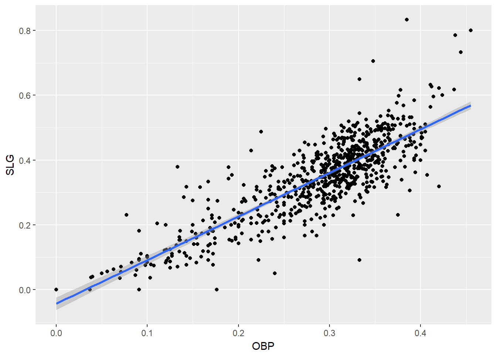
8.4.2 High leverage Points
Not all points of high leverage are influential. While the high leverage observation corresponding to Bobby Scales in the previous exercise is influential, the three observations for players with OBP and SLG values of 0 are not influential.
This is because they happen to lie right near the regression anyway. Thus, while their extremely low OBP gives them the power to exert influence over the slope of the regression line, their low SLG prevents them from using it.
mod <- lm(formula = SLG ~ OBP, data = filter(mlbBat10, AB >= 10))
# Rank high leverage points
mod %>%
augment() %>%
arrange(desc(.hat),desc(.cooksd)) %>%
head()## Warning: Deprecated: please use `purrr::possibly()` instead## Warning: Deprecated: please use `purrr::possibly()` instead## Warning: Deprecated: please use `purrr::possibly()` instead## Warning: Deprecated: please use `purrr::possibly()` instead## Warning: Deprecated: please use `purrr::possibly()` instead## SLG OBP .fitted .se.fit .resid .hat .sigma
## 1 0.000 0.000 -0.03744579 0.009956861 0.03744579 0.01939493 0.07153050
## 2 0.000 0.000 -0.03744579 0.009956861 0.03744579 0.01939493 0.07153050
## 3 0.000 0.000 -0.03744579 0.009956861 0.03744579 0.01939493 0.07153050
## 4 0.308 0.550 0.69049108 0.009158810 -0.38249108 0.01641049 0.07011360
## 5 0.000 0.037 0.01152451 0.008770891 -0.01152451 0.01504981 0.07154283
## 6 0.038 0.038 0.01284803 0.008739031 0.02515197 0.01494067 0.07153800
## .cooksd .std.resid
## 1 0.0027664282 0.5289049
## 2 0.0027664282 0.5289049
## 3 0.0027664282 0.5289049
## 4 0.2427446800 -5.3943121
## 5 0.0002015398 -0.1624191
## 6 0.0009528017 0.3544561